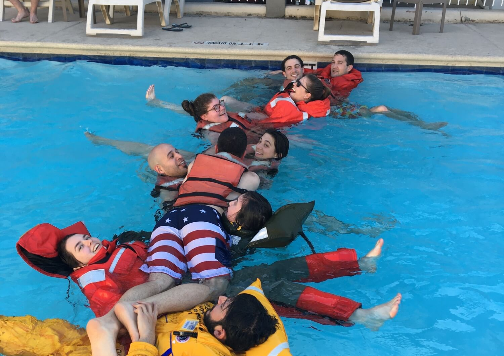
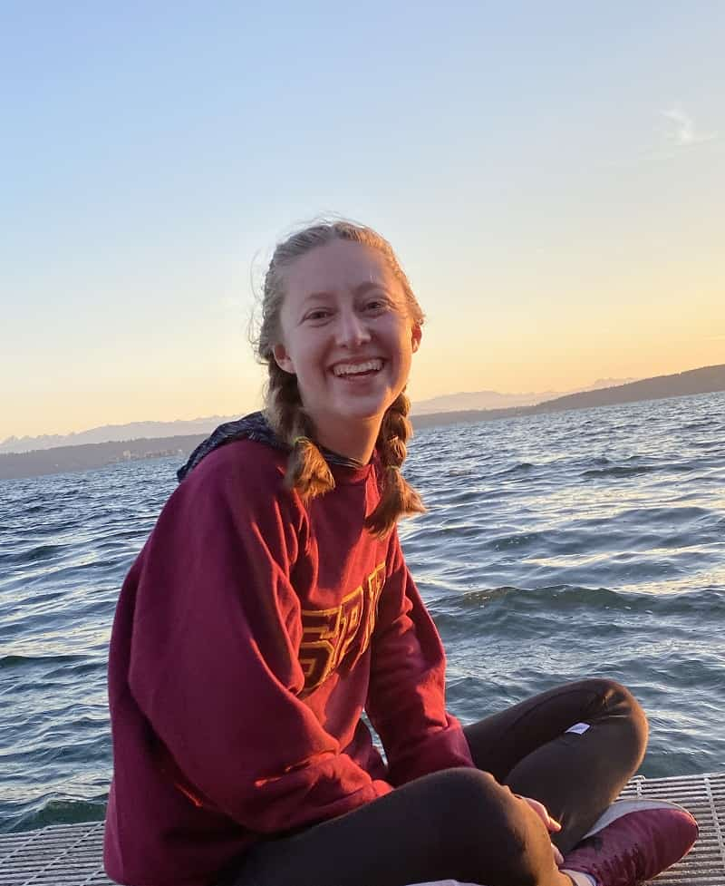
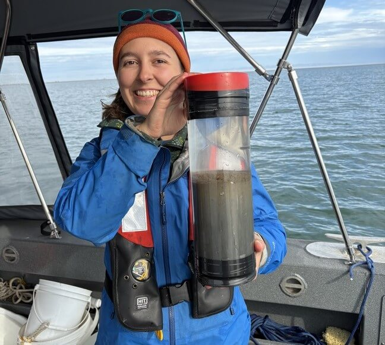

Student Research at BLE LTER
Science at the BLE LTER includes substantial field and analytical opportunities for graduate students as we jointly seek to understand how the strong seasonality in physical events drive biological processes that shape the complex nature of Arctic lagoon ecosystems. Graduate students and their research are an essential part of the BLE network. Students bring new ideas and perspectives into research and through their adept networking skills, enable productive interactions within the BLE LTER. The diverse science of the BLE LTER (from sea ice dynamics to benthic ecology) attracts graduate students across multiple disciplines that are based at several institutions across the U.S. Students interested in working on research initiatives within the BLE LTER are encouraged to contact the relevant investigators.

Student Profiles

Mathea Kurtz-Shaw
The University of Texas at Austin, Marine Science Institute
My research interests encompass the variety of organisms that live within and on the sediment of the Beaufort Lagoon Ecosystems. I am interested in the response of benthic microalgal abundance to the yearly shifts in ice coverage and accompanying salinity fluctuations. Additionally, I am exploring how the presence of these microalgae may influence the presence of benthic invertebrates. Given the importance of these benthic microalgae as nutrient sources for much of the Arctic food web and the rapidly shifting ecosystem they live in, I am excited to undertake this work as part of the broader BLE LTER community.

Rachel Shrives
Virginia Institute of Marine Science, College of William & Mary
My graduate research with the BLE investigates the coastal biogeochemistry of Arctic lagoons along the Beaufort Sea coast with the aim of better understanding the carbon and nitrogen cycling processes in this unique ecosystem. More specifically, I will be exploring how terrestrial and marine inputs impact microbial nutrient cycling and net ecosystem metabolism in benthic systems experiencing dynamic seasonality. With pressing changes such as decreasing ice extent and increasing coastal erosion, I am interested in exploring the resilience of sea ice-pelagic-benthic coupling pathways in coastal Arctic ecosystems.
Get involved
Interested in keeping up with the BLE student community? Sign up for the BLE student email group. The group serves as the communication channel and forum for reading seminars, professional development opportunities, and other banter. Email the BLE Information Management team at BLE-IM@utexas.edu to be added to the group.
Students interested in working on research initiatives within the BLE are encouraged to contact the relevant investigators.